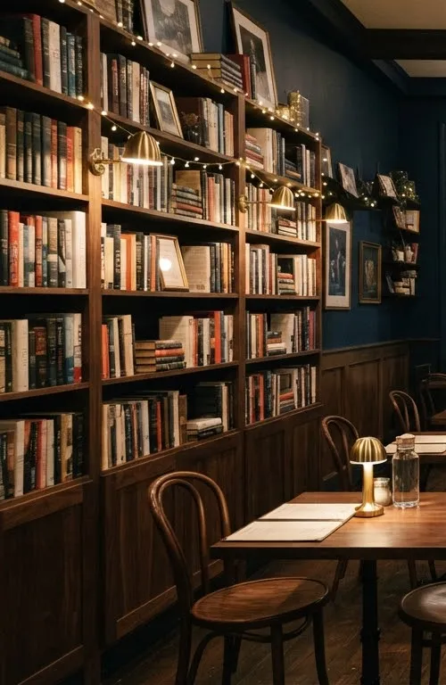
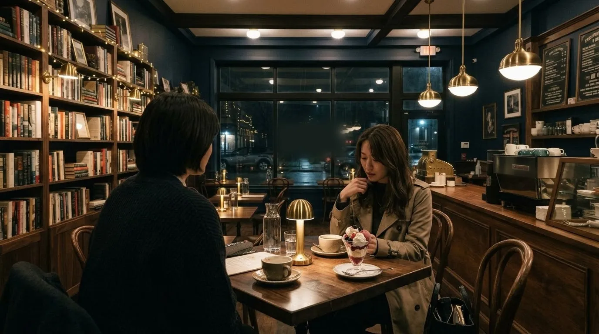
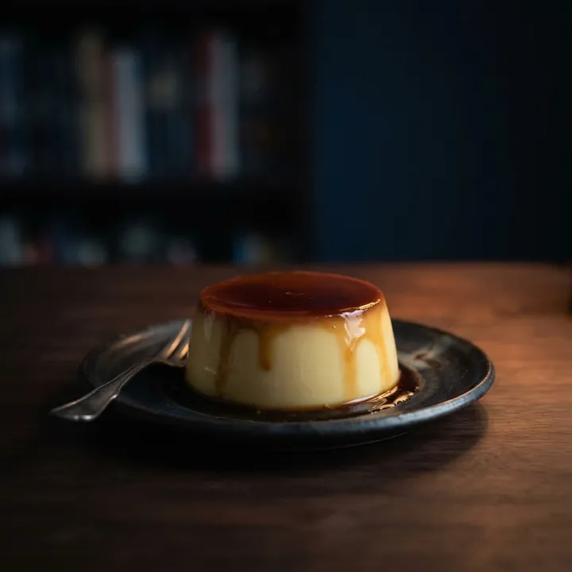

TSUKIYOMI
BRAND GUIDELINES
月がのぼったら、ひらく喫茶店。
CONCEPT
夜にだけ、ひらく場所。
月がのぼったら、
ひらく喫茶店。
TSUKIYOMI は、日が沈んだあとにだけ灯りをともす、本とコーヒーの喫茶店です。
一日の終わりに、誰にも急かされず、本を一冊とコーヒーを一杯。
にぎやかさではなく、静けさを売る店でありたい。
月の満ち欠けに合わせて、限定のひと皿が入れ替わります。
「今夜の月は、どんな形だろう」と、空を見上げるきっかけになる店です。
静けさQuiet
音楽は小さく、灯りは低く。声をひそめたくなる空気を、いちばんの商品と考える。
本Books
壁一面の本は、自由に読める。読み終えなくていい。続きは次の夜に。
月あかりMoonlight
金色の小さな灯り。月の満ち欠けを、メニューと季節の合図にする。
仕事帰りに、ひとりで頭を休めたい20〜40代。にぎやかなカフェは少し疲れる人。
長居してもいい。話さなくてもいい。帰り道が、少しだけ静かな気持ちになること。
LOGO
三日月と、名前。
三日月のマークと、細い英字の組み合わせ。マークは「欠けているけれど、これから満ちていく月」。夜にひらく店の、はじまりの合図です。
まわりの余白
マークの高さの半分（x）以上は、何も置かない。ロゴが静かに見えるための決まりです。
いちばん小さいサイズ
画面では横組み96px、印刷では幅18mmより小さくしない。それより小さい場所ではマークだけを使う。
DON'T
COLOR
夜空の紺と、灯りの金。
ほとんどを紺で塗り、金はひとつの画面に一か所だけ。金が少ないほど、灯りはあたたかく見えます。色はクリックするとコピーできます。
BALANCE
TYPOGRAPHY
読む人の、声の大きさで。
見出しとキャッチに。少し字間を広げて、ゆっくり読ませる。
夜にだけ、会えるひと皿。
あいうえお 月本珈琲夜灯 0123456789
ロゴと英字の小見出し、値段に。大文字で字間を広く。
Books, Coffee & Moonlight
ABCDEFGHIJKLM ¥1,680 18:00
長い説明に。細めの太さで、行間を広めに取る。
カシスのジュレとバニラアイスを重ね、焼きたての三日月クッキーをひとかけ。
本を一冊、
珈琲を一杯。
- 縦書きは、短い詩のような言葉にだけ使う（2〜3行まで）
- 説明文や値段は横書き。読みやすさを優先する
- 「、」「。」の後ろが空きすぎないよう、文字の詰めを整える
PHOTOGRAPHY
暗さの中の、ひとつの灯り。



暖かい色の光を1か所から。まわりは暗く沈める。
主役は画面の3割まで。暗い部分に文字を置ける。
顔は写さない。見る人が自分を重ねられるように。
窓の外は夜空。昼の光や青空は使わない。
TONE OF VOICE
静かに、短く、ていねいに。
短く言い切る
説明しすぎない。読んだ人が、続きを想像できる余白を残す。
急かさない
「今すぐ」「限定〇名」など、あおる言葉は使わない。
夜の言葉を選ぶ
月、灯り、ページ、帰り道。店の景色が浮かぶ言葉を使う。
MOTIF
月の満ち欠けを、合図に。
4つの月の形を、限定メニュー・スタンプカード・お知らせの目印として使います。線は細く、色は紺と金だけ。
ガトーショコラ
レモンタルト
とろけるプリン
ほうじ茶ラテ
アイコンは細い線で線の太さ1.2、角は丸く。塗りつぶしのアイコンや絵文字は使わない。
星と金の粒画面には小さな星と、ゆっくり昇る金の粒。多すぎず、気づくと見えるくらいに。
APPLICATIONS
店のすみずみまで、同じ夜を。
月と本の夜カフェ
18:00 — 25:00 ／ Closed Mon.
月見町 1-2-3 つきあかりビル 2F
tsukiyomi-cafe.example
TSUKIYOMI
BOOKS & COFFEE
ショップカード表は紺に金の箔押し。裏は紙の色に、縦書きの店名。
カップ紺の帯に、金のマーク。
TSUKIYOMI
Menu for the night
COFFEE
- 夜更けのハンドドリップ720
- サイフォン珈琲820
- 月見カフェオレ780
SWEETS
- 三日月の夜パフェ1,680
- 満月のとろけるプリン680
DRINK
- 月夜のソーダ980
メニュー表紙の色に紺の文字。値段は英字の書体で。
満月がふたつ満ちたら、一杯ごちそうします。
スタンプカード来るたびに、月が満ちていく。
店の看板壁から下げる看板。